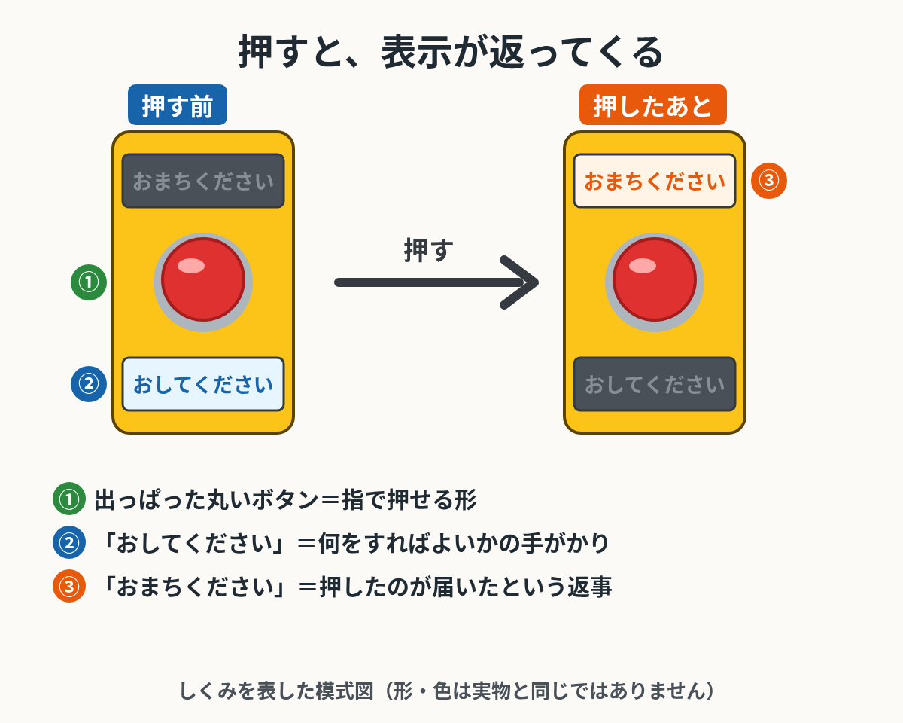
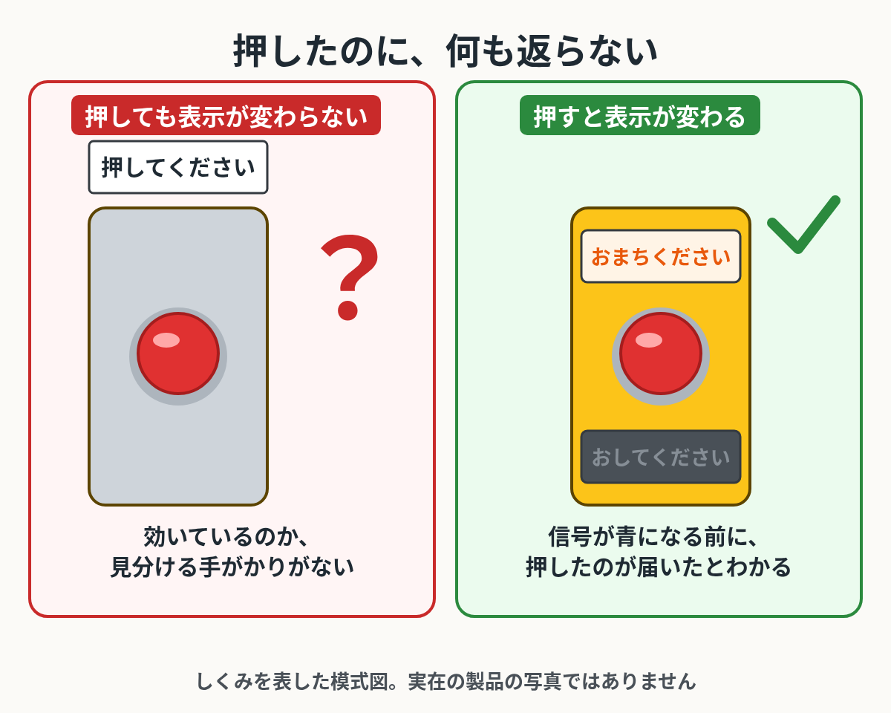

第13回 交通・道路
押しても変わらない横断ボタンと「おまちください」（押した手ごたえを返す）


何がどう行為を誘っているか
横断歩道の手前の柱にある押しボタンは、指の腹ほどの丸い出っぱりで、「押せる」ことを形だけで伝えます。押せること自体はボタンと指の関係で決まる性質で、ギブソンのいうアフォーダンスにあたります。そばの「押してください」の文字は、何をすればよいかを知らせる手がかり（シグニファイア）です。
日本の押ボタン式信号には、もう1つ大事な仕掛けがあります。大阪府警の案内によると、黄色い押ボタン箱は、歩行者用信号が赤のあいだ下の表示窓に「おしてください」と出ていて、ボタンを押すとその文字が消え、上の窓に「おまちください」が点きます。押したことが受け付けられたと、その場で目に見える形で返してくれるのです。ノーマンは、行為の結果を知らせるこの仕組みをフィードバックと呼び、すぐに、わかりやすく返すことが大切だと述べています。
惜しい例・悪い例との対比
反対の例が、押しても何も返ってこないボタンです。2004年のニューヨーク・タイムズの記事によると、ニューヨーク市に残っていた横断用の押しボタン3,250個のうち2,500個以上は、コンピュータで信号を連動させるようになってから働かなくなっていました。それでも「押してください」の札とともに残され、市の担当者は、取り外すと全体で約100万ドルかかると説明しています。
押せる形も札も残っているのに、押した先の働きがない。ゲイバーのいう「偽のアフォーダンス」に近い状態です。しかも押したあとに何も表示されないので、働くボタンと働かないボタンを見分ける手がかりもありません。日本の押ボタン式でも、幹線道路で前後の信号と連動している場所では、押してもすぐには青にならないことがあると日本交通管理技術協会は説明しています。それでも「おまちください」が点けば、押したことは届いたとわかります。待ち時間は同じでも、返事があるかどうかで安心感が変わります。
使いどころのひとこと
スライドやサイトに「押せそうなもの」を置いたら、押したあとに何が返ってくるかも一緒に見直してみてください。送信や読み込みに時間がかかるボタンなら、「送信しました」「読み込み中」と出すだけで「おまちください」と同じ安心が生まれます。授業では、身近な押しボタンを思い浮かべてもらい「押したことはどうやってわかる？」と聞くと、アフォーダンス、シグニファイア、フィードバックを一続きで話せます。
出典
- Luo, M. (2004, February 27). For Exercise in New York Futility, Push Button. The New York Times.
- 大阪府警察. 押ボタン式信号機について.
- 公益財団法人 日本交通管理技術協会. 【技術情報】信号機って？：Q&A（押ボタンを押しても、すぐ「青」に変わらないことがありますが、なぜ？）.
- Gaver, W. W. (1991). Technology affordances. Proceedings of the SIGCHI Conference on Human Factors in Computing Systems (CHI '91), 79–84.
- Norman, D. A. (2013). The Design of Everyday Things: Revised and Expanded Edition. Basic Books.（第1章 The Psychopathology of Everyday Things フィードバック）